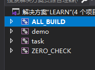
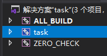

05 CMake工程层次
CMake工程结构
如果项目比较简单，比如只有一个CMakeLists.txt或者projet，那么就不用特别关心这个。但是如果一个大工程，有多个可执行文件，或者又有可执行文件，又有静态/动态库，则需要写多个CMakeLists.txt
多个CMakeLists如何写
一般最外层的CMakeLists写：
1.设置编译后输出的位置
2.设置整个工程的C++版本
3.
add_subdirectory()
什么时候写projet()
一般只有最外层的CMakeLists写一下projet()。每写一个projet()，就会生成一个.sln文件。单独打开就如右图所示。左图是最外层的.sln文件


如果用VS的话，每个project就可以单独编译，但如果用的是VSCode的话，即使不写project每个subdirectory也可以单独编译，所以就没必要写了
All articles on this blog are licensed under CC BY-NC-SA 4.0 unless otherwise stated.